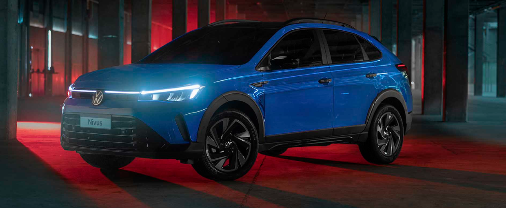
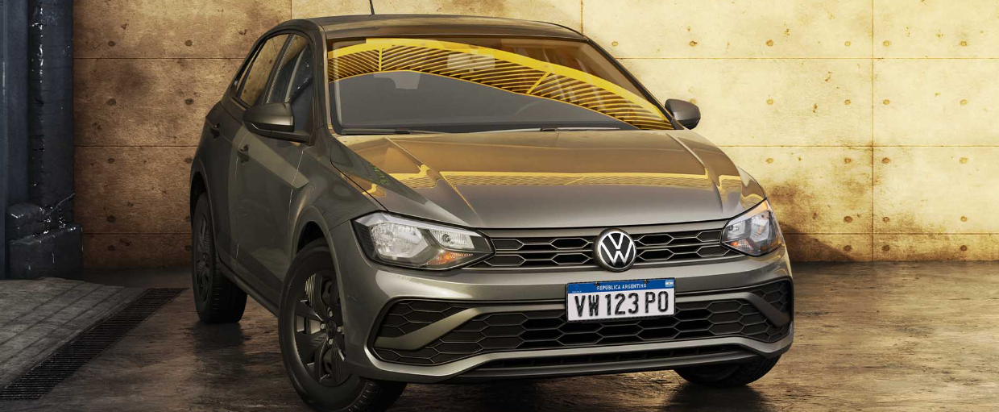
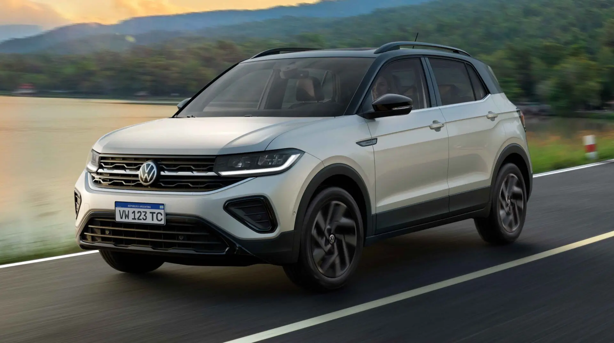
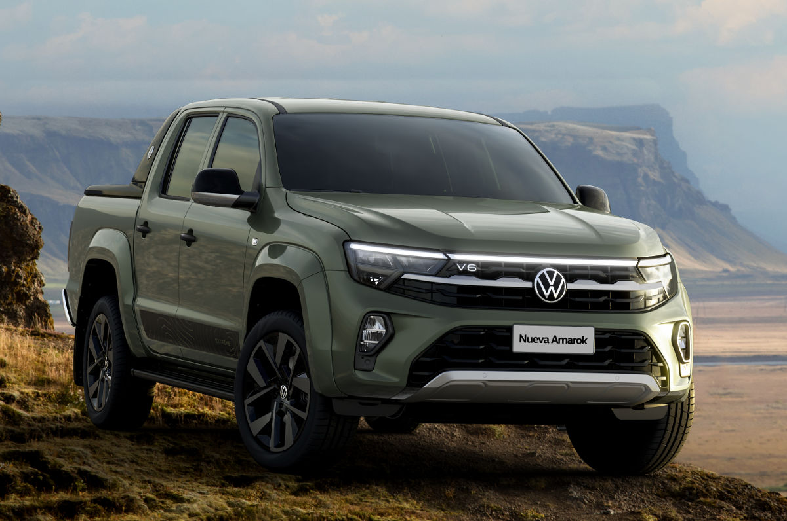

Vehiculos Exclusivos Disponibles
Te ofrecemos una seleccion de autos unicos, pensados para quienes buscan calidad, innovacion y diseño.
Estos son algunos de los modelos destacados que tenemos para vos.
Volskwagen Nivus 2025 Es el crossover ideal para aquellos que buscan una combinacion de eficiencia, tecnologia y diseño moderno. Equipado con un motor 1.0 TSI de 101CV, asociado a una caja manual de 5 marchas, el Nivus ofrece un rendimiento excepcional para un manejo agil y economico en la ciudad y fuera de ella. En cuanto a equipamiento el Nivus 2025 viene con una pantalla tactil de 8"conectividad inalambrica para Apple CarPlay y Android Auto, ademas de climatizador automatico y sensores de estacionamiento delanteros y traseros. Las versiones superiores incluyen un cargador inalambrico y control de cuero adaptivo, ofreciendo mayor comodidad y conectividad. Este vehiculo esta diseñado para quienes desean un crossover compacto, eficiente y lleno de tecnologia sin renunciar a la comodidad.
Volkswagen Polo 2025 Llega renovado, con un diseño moderno, mas tecnologia y un enfoque en la eficiencia sin perder el estilo deportivo que lo caracteriza. Bajo el capo, incorpora un motor 1.0 MPI de 84 CVo, en versiones superiores, el reconocido 1.0 TSI de 101 CV, ambos combinados con transmision manual de 5 marchas o automatica Tiptronic de 6 velocidades, brindando una experiencia de manejo suave, agil y economica. En cuanto a equipamiento, el nuevo Polo incorpora una pantalla táctil de 10" en versiones más equipadas, compatible con Apple CarPlay y Android Auto, climatizador automático, cámara de visión trasera, control de velocidad crucero y un tablero digital completamente personalizable.
Además, suma faros LED, sensor de estacionamiento trasero, y seis airbags de serie, garantizando altos estándares de seguridad y confort.
El Polo 2025 es ideal para quienes buscan un hatchback urbano, con gran diseño, tecnología de punta y el respaldo de la ingeniería alemana, adaptado a la vida diaria con estilo y practicidad.
Volkswagen t-cross 2025 Se posiciona como un SUV de tamaño compacto pero con gran capacidad, ideal para quienes buscan un diseño versátil, tecnología avanzada y un manejo ágil. Equipado con un motor 1.0 TSI de 101 CV y una caja manual de 5 marchas, el T-Cross proporciona un equilibrio perfecto entre rendimiento y eficiencia en el día a día.
En términos de equipamiento , el T-Cross 2025 incluye una pantalla táctil de 10" en las versiones superiores, climatizador automático con salidas de aire en plazas traseras y volante multifunción con levas de cambio. Además, ofrece un sistema de estacionamiento asistido Park Assist y, en las versiones más completas, un techo solar panorámico, brindando una experiencia de conducción superior. El T-Cross es el SUV que se adapta a las necesidades de quienes buscan un vehículo moderno, práctico y lleno de tecnología.
Volkswagen Amarok 2025 es una camioneta que combina potencia, tecnología avanzada y un diseño robusto, diseñada para los que buscan un rendimiento excepcional tanto en carretera como en terrenos difíciles. Con motorizaciones que incluyen un motor 2.0 TDI (140 CV) con caja manual de 6 marchas y tracción 4×2.
El equipamiento de la Amarok 2025 está diseñado para brindar la mejor experiencia de conducción, con pantalla táctil de 9” con Apple CarPlay y Android Auto en todas las versiones, seis airbags de serie , y avanzadas asistencias a la conducción (ADAS) como alerta de cambio de carril y monitoreo de tráfico. Además, la Amarok cuenta con versiones que incluyen Safer Tag, que monitorea y actualiza el estado de las asistencias a la conducción en tiempo real.
Disponible en varias versiones, la Amarok 2025 ofrece la máxima versatilidad y seguridad para quienes necesitan una camioneta de trabajo y aventura sin sacrificar confort ni tecnología.



